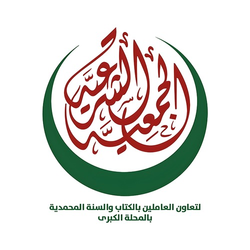
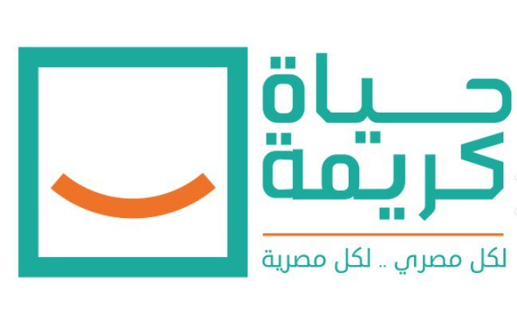
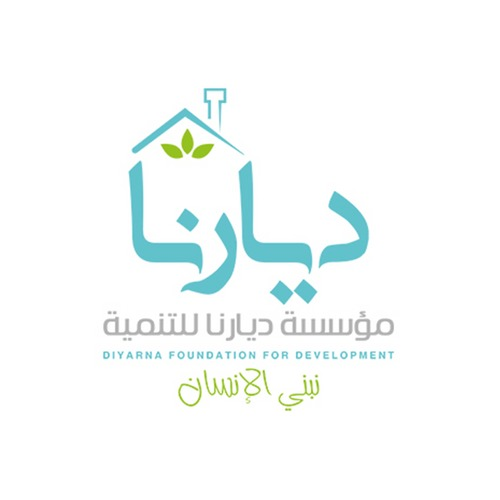
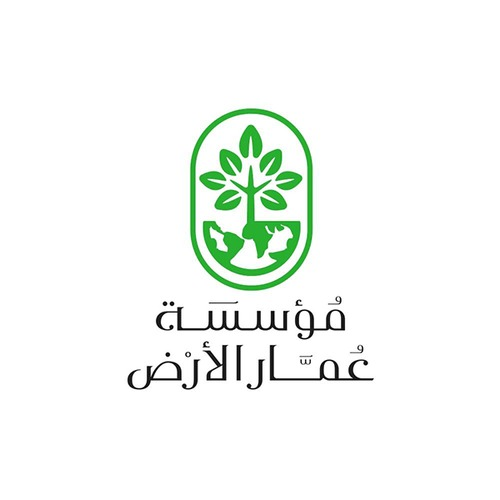
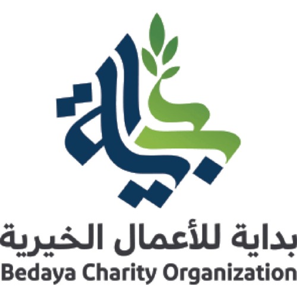

Education
Education is the process of acquiring knowledge, skills, values, and
habits through study, instruction, or practical experience. Education is
essential for the development of individuals and communities, as it
contributes to raising awareness and culture, and preparing individuals to
face the challenges of life and work. Education can be formal through
schools and universities, or informal through everyday experiences and
self-learning.
The importance of education
Education has a pivotal role in enabling individuals to acquire the
knowledge and skills they need to meet the challenges of life and work.
Education contributes to improving the economic situation of individuals
by providing better job opportunities and increasing income. Education
also promotes social values such as cooperation, respect and tolerance,
and helps build a more harmonious and cohesive society. Thanks to
education, individuals are able to think critically and make informed
decisions, contributing to social justice and improving public health. In
addition, education encourages innovation and technological and scientific
progress, driving the development of society as a whole.
The role of charities in education
Charities play an important role in supporting education and improving the
quality of life. It offers many programs and initiatives that include
providing scholarships to students who are unable to afford education, and
contributes to the construction and maintenance of schools, especially in
remote or poor areas. These institutions provide books, study supplies,
and educational equipment to schools and students in need, as well as free
lessons and reviews to improve academic performance. In addition, some
institutions offer school feeding programs to ensure that students receive
healthy and balanced meals, enhancing their focus and academic
performance. Health and psychological education is also part of the
effort, to provide a healthy and safe learning environment. Charities are
also interested in training teachers to improve the quality of education
and increase their skills. >All these efforts work together to ensure that
students receive a quality education regardless of their financial or
social situation. There are many ways in which these institutions play a
key role in improving and developing education.
Educational charities
There are many educational charities that work to support and improve
education in poor and needy communities. These associations offer a
variety of services such as providing scholarships to students, building
and maintaining schools, providing books and study supplies, and offering
free lessons and reviews to improve academic performance. Some
associations also offer school feeding programs to ensure that students
receive healthy and balanced meals, and train teachers to improve the
quality of education. Thanks to these efforts, educational charities
contribute to improving educational opportunities and providing a better
learning environment for children and young people regardless of their
financial or social situation. These associations work hard to ensure that
everyone has access to education and sustainable development in the
communities they serve.

Misr El Kheir Community Schools with Misr El Kheir Foundation
Donate to Misr El Kheir Foundation to support the education of
underprivileged children aged 6 to 18, or those who are at the age of
compulsory education. Contribute to make a real difference!

Student Sponsorship Project with the Main Sharia Association
Contribute with the main Sharia Association in the project of sponsoring
the poor student of knowledge to support the education of orphans and
combat illiteracy in Egypt

Annual education sponsorship with Hayat Karima Foundation
Contribute with the Decent Life Foundation to provide full support to
needy students, by paying tuition fees, school books, and necessary
educational materials.

Tuition fees and school bags with Diarna Development Foundation
Contribute with Diarna Development Foundation to pay tuition fees and
provide school bags for needy students.

Education Campaign with Ammar Al Ard Foundation
Contribute with Ammar Al Ard Foundation to support the Education
Campaign, a humanitarian initiative that aims to enable students from
needy families to continue their education and have better opportunities
for a bright future.

Back to School with Bidaya Charity Association
Contribute with Bidaya Charity Association to support the Education
Campaign, a humanitarian initiative that aims to enable students from
needy families to continue their education and have better opportunities
for a bright future.
wasl